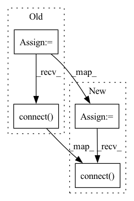

Pattern ID :32594
Before Change
self.snipButton = QPushButton("Snip [Alt+S]", self)
self.snipButton.clicked.connect(self.onClick)
self.shortcut = QShortcut(QKeySequence("Alt+S"), self)
self.shortcut.activated.connect( self.onClick)
// Create retry button
self.retryButton = QPushButton("Retry", self)
self.retryButton.setEnabled(False)After Change
self.snipButton.clicked.connect(self.onClick)
if sys.platform == "darwin":
self.shortcut = QShortcut(QKeySequence("Alt+S"), self)
self.shortcut.activated.connect( self.onClick)
else:
self.shortcut = QShortcut(QKeySequence("Alt+S"), self)
self.shortcut.activated.connect(self.onClick)
In pattern: SUPERPATTERN
Frequency: 5
Non-data size: 4
Instances Fragment ID: 94859847
Project Name: lukas-blecher/latex-ocr
Commit Name: b415d97bca27ef2b1b094477c80dff81ef82f3fd
Time: 2022-09-24
Author: 91851558+FrankFrank9@users.noreply.github.com
File Name: pix2tex/gui.py
M Class Name: App
N Class Name: App
M Method Name: initUI(1)
N Method Name: initUI(1)
M Parent Class: QMainWindow
N Parent Class: QMainWindow
M File Name: pix2tex/gui.py
N File Name: pix2tex/gui.py
M Start Line: 61
M End Line: 65
N Start Line: 61
N End Line: 76
Before Change
self.action = "no" // no, next, back, quit are the possibilities
// new canvas prepared for visualizing data
self.canvas = SceneCanvas(keys="interactive", show=True)
// interface (n next, b back, q quit, very simple)
self.canvas.events.key_press.connect(self.key_press)
self.canvas.events.draw.connect( self.draw)
// grid
self.grid = self.canvas.central_widget.add_grid()
// laserscan partAfter Change
visuals.XYZAxis(parent=self.gt_view.scene)
// --- Canvas por prediction ---
self.predicted_canvas = SceneCanvas(keys="interactive", show=True)
// interface (n next, b back, q quit, very simple)
self.predicted_canvas.events.key_press.connect(self.key_press)
self.predicted_canvas.events.draw.connect( self.draw)
// grid
self.predicted_grid = self.predicted_canvas.central_widget.add_grid()
self.predicted_view = vispy.scene.widgets.ViewBox( Fragment ID: 94859845
Project Name: jabb0/fastflow3d
Commit Name: 25f09dc797762c4cc7352c5eefd25363831cf76f
Time: 2021-07-06
Author: carlosmn1997@gmail.com
File Name: visualization/laserscanvis.py
M Class Name: LaserScanVis
N Class Name: LaserScanVis
M Method Name: reset(1)
N Method Name: reset(1)
M Parent Class:
N Parent Class:
M File Name: visualization/laserscanvis.py
N File Name: visualization/laserscanvis.py
M Start Line: 37
M End Line: 75
N Start Line: 55
N End Line: 68
Before Change
self.layout.addWidget(self.name_edit)
if show_remove:
self.remove_btn = QtWidgets.QPushButton("Remove")
self.remove_btn.clicked.connect( self.removed.emit)
self.layout.addWidget(self.remove_btn)
self.setLayout(self.layout)
After Change
self.color_btn.clicked.connect(self.color_btn_clicked)
self.layout.addWidget(self.color_btn)
self.remove_btn = QtWidgets.QPushButton("Remove")
self.remove_btn.clicked.connect( self.removed.emit)
self.layout.addWidget(self.remove_btn)
self.setLayout(self.layout)
Fragment ID: 94859842
Project Name: abe404/root_painter
Commit Name: 798f31be6db00f2c44609bec21f119f8c8141ca5
Time: 2021-06-13
Author: abe@abesmith.co.uk
File Name: painter/src/main/python/palette.py
M Class Name: BrushEditWidget
N Class Name: BrushEditWidget
M Method Name: initUI(1)
N Method Name: initUI(2)
M Parent Class: QtWidgets.QWidget
N Parent Class: QtWidgets.QWidget
M File Name: painter/src/main/python/palette.py
N File Name: painter/src/main/python/palette.py
M Start Line: 41
M End Line: 54
N Start Line: 45
N End Line: 58
Before Change
self.name_edit.textChanged.connect(self.text_changed)
self.layout.addWidget(self.name_edit)
self.remove_btn = QtWidgets.QPushButton("Remove")
self.remove_btn.clicked.connect( self.removed.emit)
self.layout.addWidget(self.remove_btn)
self.setLayout(self.layout)
After Change
self.layout.addWidget(self.name_edit)
if show_remove:
self.remove_btn = QtWidgets.QPushButton("Remove")
self.remove_btn.clicked.connect( self.removed.emit)
self.layout.addWidget(self.remove_btn)
self.setLayout(self.layout)
Fragment ID: 94859841
Project Name: abe404/root_painter
Commit Name: ab30ae28f4f70ac714c0733c7a888a2f461b736c
Time: 2021-05-29
Author: abe@abesmith.co.uk
File Name: painter/src/main/python/palette.py
M Class Name: BrushEditWidget
N Class Name: BrushEditWidget
M Method Name: initUI(2)
N Method Name: initUI(1)
M Parent Class: QtWidgets.QWidget
N Parent Class: QtWidgets.QWidget
M File Name: painter/src/main/python/palette.py
N File Name: painter/src/main/python/palette.py
M Start Line: 49
M End Line: 51
N Start Line: 41
N End Line: 54
Before Change
self.snipButton.clicked.connect(self.onClick)
if sys.platform == "darwin":
self.shortcut = QShortcut(QKeySequence("Alt+S"), self)
self.shortcut.activated.connect( self.onClick)
else:
self.shortcut = QShortcut(QKeySequence("Alt+S"), self)
self.shortcut.activated.connect(self.onClick)
After Change
self.snipButton = QPushButton("Snip [Alt+S]", self)
self.snipButton.clicked.connect(self.onClick)
self.shortcut = QShortcut(QKeySequence("Alt+S"), self)
self.shortcut.activated.connect( self.onClick)
// Create retry button
self.retryButton = QPushButton("Retry", self)
self.retryButton.setEnabled(False) Fragment ID: 94859838
Project Name: lukas-blecher/latex-ocr
Commit Name: 930428c601e03d03ac19bda49eeec95bda1cf73f
Time: 2022-09-25
Author: 91851558+FrankFrank9@users.noreply.github.com
File Name: pix2tex/gui.py
M Class Name: App
N Class Name: App
M Method Name: initUI(1)
N Method Name: initUI(1)
M Parent Class: QMainWindow
N Parent Class: QMainWindow
M File Name: pix2tex/gui.py
N File Name: pix2tex/gui.py
M Start Line: 68
M End Line: 76
N Start Line: 68
N End Line: 69